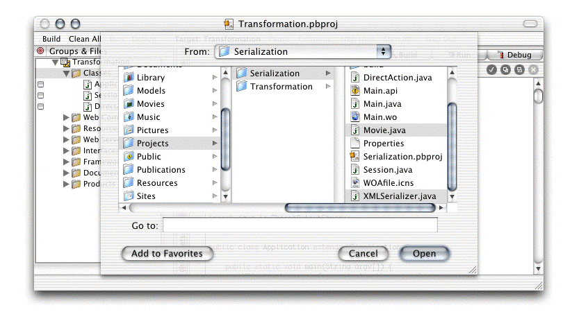

Transforming XML Documents
In “Serializing Objects and Data” you learned how to serialize and deserialize objects and primitive-type values. This chapter explains how you transform a stream containing serialized data into an XML document using an XSLT script.
The chapter contains the following sections:
“The Transformation Process” contains example code fragments that perform transformations.
“Creating the Transformation Project” shows how to create the project.
“Transforming Primitive-Type Values Using Keys” explains how to create an XML document from data serialized using keys.
“Transforming an Array of Movies” explains how to transform an NSArray of custom objects into an XML document.
The Transformation Process
The XMLSerializer class of the Serialization project, introduced in“XML Serialization Essentials” and listed in Listing B-2 includes the transformObject method, shown in Listing 5-1.
Listing 5-1 The transformObject method in XMLSerializer .java
/** |
* Serializes objects and data to a stream, which can also be |
* transformed. The product of the process is written to a file. |
* |
* @param source object to serialize or transform |
* @param filename filename of the target document, |
* including path and extension |
* @param transformation type of transformation to perform; |
* indicates which transformation script to use. |
* When <code>null</code>, no transformation |
* is performed, only serialization. |
* |
* @return <code>true</code> when the process succeeds. |
*/ |
public static boolean transformObject(Object source, String filename, String transformation) { |
boolean success = false; |
try { |
// Create a stream to the output file. |
NSXMLOutputStream stream = (NSXMLOutputStream)openStream(filename, false, transformation);// 1 |
// Serialize data to XML output stream. |
stream.writeObject(source); |
stream.flush(); |
closeStream(filename); |
success = true; |
} |
catch (IOException e) { |
e.printStackTrace(); |
} |
return success; |
} |
The transformObject method opens an output stream (line numbered 1) to a file using the openStream method (Listing 5-2), which initializes the XML transformer using the initializeTransformer method (line 1), shown in Listing 5-3. The openStream method also turns indenting on using the NSXMLOutputFormat(boolean) constructor of the NSXMLOutputFormat class (lines 2 and 3).
Listing 5-2 The openStream method in XMLSerializer.java
/** |
* Opens a file stream to or from a file and a corresponding |
* output or input object stream. |
* Adds the pair of streams to an internal dictionary for use by |
* the <code>closeStream</code> method. |
* |
* @param filename fully qualified filename of the |
* target or source file; identifies |
* the channel to open |
* @param input_stream indicates whether the stream returned |
* is an input stream or an output stream: |
* <code>true</code> for an input stream and |
* <code>false</code> for an output stream. |
* @param transformation type of transformation to perform; |
* indicates which transformation script to use. |
* When <code>null</code>, no transformation |
* is performed, only serialization. |
* |
* @return object stream, <code>null</code> when the stream |
* could not be created. |
*/ |
private static Object openStream(String filename, boolean input_stream, String transformation) throws IOException { |
BufferedOutputStream file_output_stream = null; |
BufferedInputStream file_input_stream = null; |
Channel channel; |
Object xml_stream = null; |
if (input_stream) { |
// Create an input stream from the file. |
file_input_stream = new BufferedInputStream(new FileInputStream(filename)); |
// Create object input stream. |
xml_stream = new NSXMLInputStream(file_input_stream); |
channel = new Channel(file_input_stream, xml_stream, input_stream); |
} else { |
// Create an output stream to the file. |
file_output_stream = new BufferedOutputStream(new FileOutputStream(filename)); |
// Create object output stream. |
if (transformation != null) { |
xml_stream = initializeTransformer(file_output_stream, transformation);// 1 |
} else { |
xml_stream = new NSXMLOutputStream(file_output_stream); |
} |
// Set the format of the output document (XML). |
NSXMLOutputFormat format = new NSXMLOutputFormat(true);// 2 |
((NSXMLOutputStream)xml_stream).setOutputFormat(format);// 3 |
channel = new Channel(file_output_stream, xml_stream, input_stream); |
} |
channels.setObjectForKey(channel, filename); |
return xml_stream; |
} |
Listing 5-3 The initializeTransformer method in XMLSerializer.java
/** |
* Initializes the transformer. |
* |
* @param file_stream target file stream |
* @param transformation type of transformation to perform; |
* indicates which transformation file to use |
* |
* @throws IOException when there's a problem initializing the transformer. |
*/ |
private static NSXMLOutputStream initializeTransformer(BufferedOutputStream file_stream, String transformation) throws IOException { |
NSXMLOutputStream xml_stream = new NSXMLOutputStream(file_stream, new File(transformationURI(transformation)));// 1 |
Transformer transformer = ((NSXMLOutputStream)xml_stream).transformer(); |
transformer.setOutputProperty("{http://xml.apache.org/xslt}indent-amount", "2"); |
return xml_stream; |
} |
The initializeTransformer method takes a stream to a file in the file_stream parameter, which it uses to create the NSXMLOutputStream object (1) that transforms whatever is written to it using the transformation script indicated by the transformation parameter. Then it sets an output property of the transformer; in this case it sets the indentation level of the new document.
Creating the Transformation Project
This section shows you how to create the Transformation project, which is based on the Serialization project created in “Serializing Objects and Data.” (You can avoid all the manual work by copying the Transformation folder in projects/Transformation/Starter to your working directory.)
In Project Builder, create a WebObjects application project and name it
Transformation.Add an empty file to the project's Resources group and name it
SimpleTransformation.xsland enter the XSLT transformation script in Listing B-3 as the file's contents. (Alternatively, you can add theSimpleTransformation.xslfile inprojects/Transforming/Starter/Transformationto your project.) AssignSimpleTransformation.xslto the Application Server target.Copy the
Application.javafile from the Serialization project's folder into the Transformation project's folder.Add
Movie.javaandXMLSerializer.javafrom the Serialization project to the Transformation project. Make sure to copy the files to the Transformation folder and to assign them to the Application Server target.
Transforming Primitive-Type Values Using Keys
This section shows you how to convert a stream generated by NSXMLOutputStream into an XML document in which the element name of each data element is derived from the value of the key attribute of each serialized object.
All you have to do is copy the serializePrimitives method of Application.java and paste it at the bottom of the file. Then edit the method so that it looks like Listing 5-4 (change the numbered lines). Listing B-3 shows the XSLT script used to perform the transformation.
Listing 5-4 The transformPrimitives method in the Application class
/** |
* Transforms a set of primitive values.// 1 |
* |
* @param filename identifies the target file including its// 2 |
* path and extension |
* @param an_int value to serialize |
* @param a_boolean value to serialize |
* @param a_char value to serialize |
* @param a_double value to serialize |
*/ |
public void transformPrimitives(filename, int an_int, boolean a_boolean, char a_char, double a_double) {// 3 |
try { |
// Open an output stream. |
NSXMLOutputStream stream = XMLSerializer.openOutputStream(filename, XMLSerializer.TRANSFORM_SIMPLE);// 4 |
// Write values. |
stream.writeInt(an_int, "my_integer"); |
stream.writeBoolean(a_boolean, "my_boolean"); |
stream.writeChar(a_char, "my_char"); |
stream.writeDouble(a_double, "my_double"); |
// Close the stream. |
XMLSerializer.closeStream(filename); |
} |
catch (IOException e) { |
e.printStackTrace(); |
} |
} |
Now, add a call to the transformPrimitives method to Application's constructor, (for example, the code lines below) and build and run the application.
// Transform a set of primitive values. |
transformPrimitives("/tmp/PrimitivesTransformed.xml", 5, true, 'u', 3.14); |
In the transformation process, the document in Listing 5-5 is transformed into the one in Listing 5-6. The first document is not written to a file; it's the source document that the XSLT processor uses to produce the document that is actually written to the file system.
Listing 5-5 The source document: produced by NSXMLOutputStream before transformation
<?xml version="1.0" encoding="UTF-8"?> |
<content ...> |
<int key="my_integer">5</int> |
<boolean key="my_boolean">true</boolean> |
<ch key="my_char">u</ch> |
<double key="my_double">3.14</double> |
</content> |
Listing 5-6 The target document: PrimitivesTransformed.xml
<?xml version="1.0" encoding="UTF-8"?> |
<content> |
<my_integer>5</my_integer> |
<my_boolean>true</my_boolean> |
<my_char>u</my_char> |
<my_double>3.14</my_double> |
</content> |
Transforming an Array of Movies
As you may recall, “Serializing Custom Objects to an XML Document,” explains how to serialize a custom object with key values. Listing 3-14 shows the document generated. This section explains how to transform that document into another XML document.
Copy the serializeMovieArray method of Application.java to the end of the file and rename it to transformMovieArray. Edit the new method so that it looks like Listing 5-7 (change the numbered lines).
Listing 5-7 The transformMovieArray method in Application.java
/** |
* Transforms a Movie array.// 1 |
* |
* @param filename identifies the target file, including |
* its path and extension |
*/ |
public void transformMovieArray(String filename) {// 2 |
// Set the local time zone. |
NSTimeZone timeZone = NSTimeZone.timeZoneWithName("America/Los_Angeles", true); |
// Initialize the array. |
NSMutableArray movies = new NSMutableArray(); |
movies.addObject(new Movie("Alien", "20th Century Fox", new NSTimestamp(1979, 10, 25, 0, 0, 0, timeZone))); |
movies.addObject(new Movie("Blade Runner", "Warner Brothers", new NSTimestamp(1982, 1, 3, 0, 0, 0, timeZone))); |
movies.addObject(new Movie("Star Wars", "20th Century Fox", new NSTimestamp(1977, 12, 29, 0, 0, 0, timeZone))); |
// Transform the array. |
XMLSerializer.transformObject(movies, filename, XMLSerializer.TRANSFORM_SIMPLE);// 3 |
} |
Add the following code lines to Application's constructor and build and run the application.
// Transform an array of Movie objects. |
transformMovieArray("/tmp/MoviesTransformed.xml"); |
Listing 5-8 shows the product of the transformation. Notice how the transformation script (Listing B-3) replaced the reference to the studio of Star Wars (see Listing 3-14) with the correct value (20th Century Fox).
Listing 5-8 The MoviesTransformed.xml file
<?xml version="1.0" encoding="UTF-8"?> |
<content> |
<array> |
<Movie> |
<title>Alien</title> |
<studio>20th Century Fox</studio> |
<release_date>1979-10-25 07:00:00 Etc/GMT</release_date> |
</Movie> |
<Movie> |
<title>Blade Runner</title> |
<studio>Warner Brothers</studio> |
<release_date>1982-01-03 08:00:00 Etc/GMT</release_date> |
</Movie> |
<Movie> |
<title>Star Wars</title> |
<studio>20th Century Fox</studio> |
<release_date>1977-12-29 08:00:00 Etc/GMT</release_date> |
</Movie> |
</array> |
</content> |
© 2002, 2005 Apple Computer, Inc. All Rights Reserved. (Last updated: 2005-08-11)